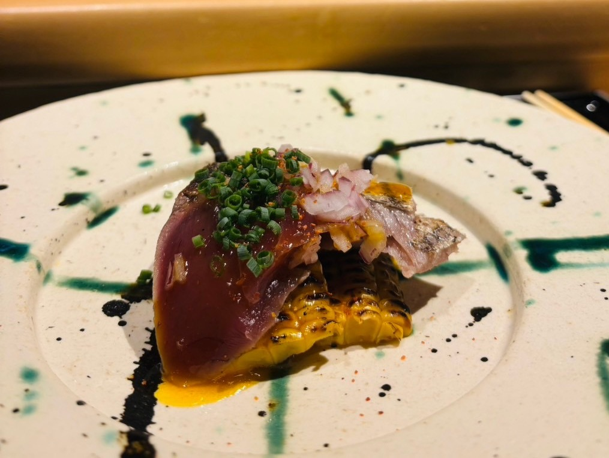
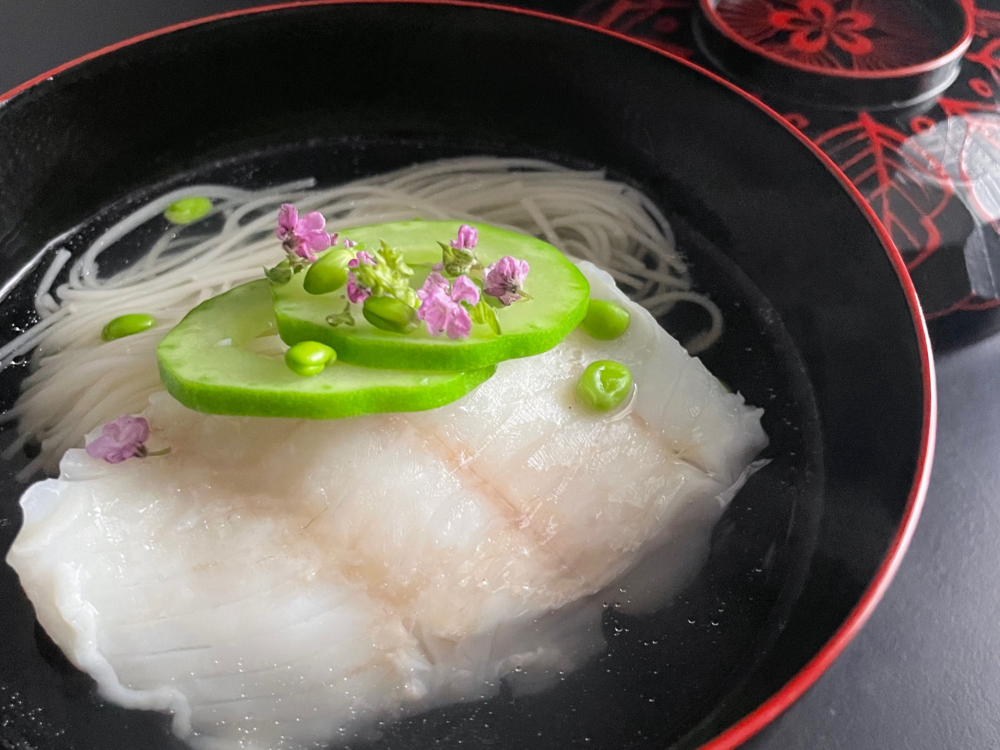

平日会席
平日限定の入り口コース。出張和食をまず気軽に体験していただくための構成です。
- 筍・菜の花・桜海老の茶碗蒸し
- 鮮魚の酒蒸し 煮麺仕立て
- 鰹の叩き 菜の花と卵黄のソース
- 春キャベツと黒豚の温しゃぶ仕立て
- 地鶏と新牛蒡の土鍋ご飯
- 季節の果物
¥8,800 / 1名（税込・出張費別）

カジュアル会席
旬の食材を使った基本の会席構成。ご家族の集まりやちょっとした記念日に。
- 前菜 生ウニと枝豆すりながし
- 椀 鮮魚酒蒸し 新わかめ 煮麺仕立て
- 造り 本日の鮮魚一種盛り
- 揚げ物 カマスの香煎揚げ
- 炊き合わせ いくらの茶碗蒸し
- 食事 銘柄鳥と新牛蒡の土鍋ご飯
- 留椀・甘味（自家製の葛餅）
¥12,000 / 1名（税込・出張費別）

季節の会席
その時期ならではの食材を中心に組む、季節感を重視した会席コース。
- 前菜 焼きとうもろこしすりながし
- 前菜 夏野菜と青海苔のお浸し
- 椀 鮮魚の酒蒸し 冬瓜 青柚子の香り
- 造り イサキ・初鰹の二種盛り
- 焼き物 鰻の蒲焼き ゴーヤ甘酢漬け
- 焚き合わせ 海老の昆布締め 素麺仕立て
- 肉料理 黒毛和牛と夏野菜のしゃぶしゃぶ
- 食事 釜揚げしらすと土鍋ご飯・甘味
¥16,500 / 1名（税込・出張費別）

記念日特別会席
誕生日や結婚記念日など、特別な日のための一段上のしつらえと献立。
- 前菜 生ウニと枝豆すりながし
- 前菜 筍・蛤の茶碗蒸し
- 椀 帆立しんじょ 新わかめ
- 造り イサキ・初鰹の二種盛り
- 揚げ物 甘鯛の香煎揚げ
- 炊き合わせ 蒸し鮑 冷製素麺仕立て
- 肉料理 黒毛和牛シンタマと季節の山菜
- 食事 銘柄鳥と新牛蒡の土鍋ご飯
- 甘味 自家製の葛餅
¥23,100 / 1名（税込・出張費別）

プレミアム会席コース
厳選した食材を惜しみなく使用する最上位コース。器や設えにもこだわった特別な一夜に。
- 前菜 焼きとうもろこしの冷製茶碗蒸し 生ウニ・帆立
- 前菜 鮑・わかめ 土佐酢ジュレ
- 椀 牡丹鱧と水茄子の椀
- 造り 鰈・鮪の二種盛り
- 魚料理 白甘鯛の鱗焼き
- 箸休め 伊勢海老の昆布締め 素麺
- 肉料理 松阪牛とヤングコーンのしゃぶしゃぶ仕立て
- 食事 金目鯛と夏野菜の土鍋ご飯
- 甘味 日本酒シャーベット・自家製粒あん
¥34,000 / 1名（税込・出張費別）
ご注意事項
・記載の価格は税込・出張費別の目安です。詳しくは料金ページをご覧ください。
・アレルギー、宗教上の食事制限、苦手な食材等は事前にお申し出ください。可能な範囲で調整いたします。
・上記以外にもオリジナル献立のご相談を承っております。まずはお問い合わせフォームよりご相談ください。
・記載の価格は税込・出張費別の目安です。詳しくは料金ページをご覧ください。
・アレルギー、宗教上の食事制限、苦手な食材等は事前にお申し出ください。可能な範囲で調整いたします。
・上記以外にもオリジナル献立のご相談を承っております。まずはお問い合わせフォームよりご相談ください。